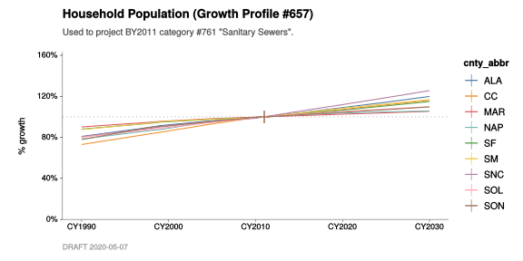
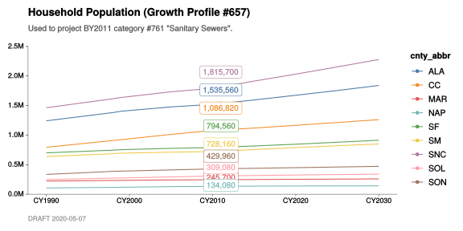

Chapter 5 Growth profiles
This chapter shows how to chart growth profiles.
In the previous chapter, we saw how to use chart_annual_growth_by() to examine relative changes in estimates of emissions and throughputs. We can also use chart_annual_growth_by() that have already been “normalized”, like growth profiles.
This chapter also introduces several new functions:
DB_growth_profiles()DB_growth_profile_crosswalk()DB_raw_growth_profiles()chart_annual_quantities_by()
We’ll use the ones beginning with DB_ to fetch some growth profile data stored in DataBank. And, we’ll use chart_annual_quantities_by() to plot the raw (non-normalized) numbers behind a specific growth profile.
5.1 Normalized growth factors
Let’s start by pulling normalized BY2011 growth factors from DataBank.
#
# `DB_growth_profiles()` automatically normalizes BY2011 profiles to CY2011. If
# you would like them normalized to a different year, just alter the value of
# `ref_year`, below.
#
# `DB_growth_profiles()` also does the work of linking profiles to categories,
# consistent with the configuration stored in DataBank for the given base year.
#
BY2011_growth_profile_data <-
BY(2011) %>%
DB_growth_profiles(
ref_year = CY(2011),
years = CY(1990:2040),
verbose = TRUE) With these in hand, we can chart the profile for BY2011 category #283 “Residential Combustion”. We use the same function, chart_annual_growth_by(), that we learned about in the previous chapter.
#
# Chart the relative growth in these growth factors.
#
BY2011_growth_profile_data %>%
filter_categories(
"#283 Space Heating" = 283) %>%
chart_annual_growth_by(
cnty_abbr,
base_year = CY(2011),
flag_years = CY(1993, 2011, 2030),
title = "Residential NG Combustion: Space and Water Heating",
subtitle = str_c(
"This is the growth profile associated with category #283 in BY2011.",
"There is a +9% change from CY2011 to CY2030.",
sep = "\n"))
5.2 County-specific growth profiles
The above profile for natural gas usage doesn’t vary by county, but we can look at one that does. In DataBank, the growth profile associated with BY2011 category #761 “Sanitary Sewers” is a good example.
#
# Chart the *raw* growth profile data for profile #657 "Household Population".
# Profile #657 was used to project BY2011 category #761 "Sanitary Sewers".
#
BY2011_growth_profile_data %>%
filter_categories(
"#761 Sanitary Sewers" = 761) %>%
chart_annual_growth_by(
color = cnty_abbr,
base_year = CY(2011),
title = "Household Population (Growth Profile #657)",
subtitle = 'Used to project BY2011 category #761 "Sanitary Sewers".')
5.3 Raw growth profile data
What if we wanted to chart the un-normalized (“raw”) growth profile data?
- First, we can pull the raw numbers, using
DB_raw_growth_profiles()instead ofDB_growth_profiles(). - Then, we find the profile associated with a given BY2011 category ID, using
DB_growth_profile_crosswalk(). - Finally, we can use
chart_annual_quantities(), rather thanchart_annual_growth(), to plot the numbers. This ensures that the numbers aren’t normalized in the process of creating the chart.
5.3.1 Pulling raw growth profile data
#
# Unlike `DB_growth_profiles()`, `DB_raw_growth_profiles()` does *not* normalize
# anything. It just assembles and returns whatever is contained in `t0335`,
# `t0336`, and `t0337`. Those numbers might be:
#
# - already normalized to CY2011; or
# - already normalized to a previous "base year" (like CY2008); or
# - in some natural unit, like "persons" or "acres".
#
# (It varies from profile to profile.)
#
BY2011_raw_growth_profile_data <-
BY(2011) %>%
DB_raw_growth_profiles(
nested = FALSE,
years = CY(1990:2040),
verbose = TRUE)5.3.2 Finding the profile associated with a BY2011 category ID
Let’s look up the growth profile associated with BY2011 category #761 “Sanitary Sewers”. This turns out to be growth profile #657. #
#
# Look up the ID of the growth profile that's been associated with BY2011
# category #761 "Sanitary Sewers".
#
BY(2011) %>%
DB_growth_profile_crosswalk(
verbose = TRUE) %>%
filter_categories(
"#761 Sanitary Sewers" = 761)| cat_id | cat_h0 | gpf_id | backcast | forecast | category |
|---|---|---|---|---|---|
| 761 | Area Source | 657 | TRUE | TRUE | #761 Sanitary Sewers |
#
# Using that growth profile ID (#657), look up the metadata associated with it
# (name, date, staff, etc.).
#
BY(2011) %>%
DB_raw_growth_profiles() %>%
filter(
gpf_id == 657) | gpf_id | gpf_raw_data | gpf_name | gpf_staff | gpf_date |
|---|---|---|---|---|
| 657 | list(gpf_from = c(“t0335”, “t0335”, “t0335”, “t0335”, “t0335”, “t0335”, “t0335”, “t0335”, “t0335”, “t0335”, “t0335”, “t0335”, “t0335”, “t0335”, “t0335”, “t0335”, “t0335”, “t0335”, “t0335”, “t0335”, “t0335”, “t0335”, “t0335”, “t0335”, “t0335”, “t0335”, “t0335”, “t0335”, “t0335”, “t0335”, “t0335”, “t0335”, “t0335”, “t0335”, “t0335”, “t0335”, “t0335”, “t0335”, “t0335”, “t0335”, “t0335”, “t0335”, “t0335”, “t0335”, “t0335”, “t0335”, “t0335”, “t0335”, “t0335”, “t0335”, “t0335”, “t0335”, “t0335”, “t0335”, | |||
| “t0335”, | “t0335”, “t0335”, “t0335”, “t0335”, “t0335”, “t0335”, “t0335”, “t0335”, “t0335”, “t0335”, “t0335”, “t0335”, “t0335”, “t0335”, “t0335”, “t0335”, “t0335”, “t0335”, “t0335”, “t0335”, “t0335”, “t0335”, “t0335”, “t0335”, “t0335”, “t0335”, “t0336”, “t0336”, “t0336”, “t0336”, “t0336”, “t0336”, “t0336”, “t0336”, “t0336”, “t0336”, “t0336”, “t0336”, “t0336”, “t0336”, “t0336”, “t0336”, “t0336”, “t0336”, “t0336”, “t0336”, “t0336”, “t0336”, “t0336”, “t0336”, “t0336”, “t0336”, “t0336”, “t0336”, “t0336”, | |||
| “t0336”, | “t0336”, “t0336”, “t0336”, “t0336”, “t0336”, “t0336”, “t0336”, “t0336”, “t0336”, “t0336”, “t0336”, “t0336”, “t0336”, “t0336”, “t0336”, “t0336”, “t0336”, “t0336”, “t0336”, “t0336”, “t0336”, “t0336”, “t0336”, “t0336”, “t0336”, “t0336”, “t0336”, “t0336”, “t0336”, “t0336”, “t0336”, “t0336”, “t0336”, “t0336”, “t0336”, “t0336”, “t0336”, “t0336”, “t0336”, “t0336”, “t0336”, “t0336”, “t0336”, “t0336”, “t0336”, “t0336”, “t0336”, “t0336”, “t0336”, “t0336”, “t0336”, “t0336”, “t0336”, “t0336”, “t0336”, | |||
| “t0336”, | “t0336”, “t0336”, “t0336”, “t0336”, “t0336”, “t0336”, “t0336”, “t0336”, “t0336”, “t0336”, “t0336”, “t0336”, “t0336”, “t0336”, “t0336”, “t0336”, “t0336”, “t0336”, “t0336”, “t0336”, “t0336”, “t0336”, “t0336”, “t0336”, “t0336”, “t0336”, “t0336”, “t0336”, “t0336”, “t0336”, “t0336”, “t0336”, “t0336”, “t0336”, “t0336”, “t0336”, “t0336”, “t0336”, “t0336”, “t0336”, “t0336”, “t0336”, “t0336”, “t0336”, “t0336”, “t0336”, “t0336”, “t0336”, “t0336”, “t0336”, “t0336”, “t0336”, “t0336”, “t0336”, “t0336”, | |||
| “t0336”, | “t0336”, “t0336”, “t0336”, “t0336”, “t0336”, “t0336”, “t0336”, “t0336”, “t0336”, “t0336”, “t0336”, “t0336”, “t0336”, “t0336”, “t0336”, “t0336”, “t0336”, “t0336”, “t0336”, “t0336”, “t0336”, “t0336”, “t0336”, “t0336”, “t0336”, “t0336”, “t0336”, “t0336”, “t0336”, “t0336”, “t0336”, “t0336”, “t0336”, “t0336”, “t0336”, “t0336”, “t0336”, “t0336”, “t0336”, “t0336”, “t0336”, “t0336”, “t0336”, “t0336”, “t0336”, “t0336”, “t0336”, “t0336”, “t0336”, “t0336”, “t0336”, “t0336”, “t0336”, “t0336”, “t0336”, | |||
| “t0336”, | “t0336”, “t0336”, “t0336”, “t0336”, “t0336”, “t0336”, “t0336”, “t0336”, “t0336”, “t0336”, “t0336”, “t0336”, “t0336”, “t0336”, “t0336”, “t0336”, “t0336”, “t0336”, “t0336”, “t0336”, “t0336”, “t0336”, “t0336”, “t0336”, “t0336”, “t0336”, “t0336”, “t0336”, “t0336”, “t0336”, “t0336”, “t0336”, “t0336”, “t0336”, “t0336”, “t0336”, “t0336”, “t0336”, “t0336”, “t0336”, “t0336”, “t0336”, “t0336”, “t0336”, “t0336”, “t0336”, “t0336”, “t0336”, “t0336”, “t0336”, “t0336”, “t0336”, “t0336”, “t0336”, “t0336”, | |||
| “t0336”, | “t0336”, “t0336”, “t0336”, “t0336”, “t0336”, “t0336”, “t0336”, “t0336”, “t0336”, “t0336”, “t0336”, “t0336”, “t0336”, “t0336”, “t0336”, “t0336”, “t0336”, “t0336”, “t0336”, “t0336”, “t0336”, “t0336”, “t0336”, “t0336”, “t0336”, “t0336”, “t0336”, “t0336”, “t0336”, “t0336”, “t0336”, “t0336”, “t0336”, “t0336”, “t0337”, “t0337”, “t0337”, “t0337”, “t0337”, “t0337”, “t0337”, “t0337”, “t0337”, “t0337”, “t0337”, “t0337”, “t0337”, “t0337”, “t0337”, “t0337”, “t0337”, “t0337”, “t0337”, “t0337”, “t0337”, | |||
| “t0337”, | “t0337”, “t0337”, “t0337”, “t0337”, “t0337”, “t0337”, “t0337”, “t0337”, “t0337”, “t0337”, “t0337”, “t0337”, “t0337”, “t0337”, “t0337”, “t0337”, “t0337”, “t0337”, “t0337”, “t0337”, “t0337”, “t0337”, “t0337”, “t0337”, “t0337”, “t0337”, “t0337”, “t0337”, “t0337”, “t0337”, “t0337”, “t0337”, “t0337”, “t0337”, “t0337”, “t0337”, “t0337”, “t0337”, “t0337”, “t0337”, “t0337”, “t0337”, “t0337”, “t0337”, “t0337”, “t0337”, “t0337”, “t0337”, “t0337”, “t0337”, “t0337”, “t0337”, “t0337”, “t0337”, “t0337”, | |||
| “t0337”, | “t0337”, “t0337”, “t0337”, “t0337”, “t0337”, “t0337”, “t0337”, “t0337”, “t0337”, “t0337”, “t0337”, “t0337”, “t0337”, “t0337”, “t0337”, “t0337”, “t0337”, “t0337”, “t0337”, “t0337”, “t0337”, “t0337”, “t0337”, “t0337”, “t0337”, “t0337”, “t0337”, “t0337”, “t0337”, “t0337”, “t0337”, “t0337”, “t0337”, “t0337”, “t0337”, “t0337”, “t0337”, “t0337”, “t0337”, “t0337”, “t0337”, “t0337”, “t0337”, “t0337”, “t0337”, “t0337”, “t0337”, “t0337”, “t0337”, “t0337”, “t0337”, “t0337”, “t0337”, “t0337”, “t0337”, | |||
| “t0337”, | “t0337”, “t0337”, “t0337”, “t0337”, “t0337”, “t0337”, “t0337”, “t0337”, “t0337”, “t0337”, “t0337”, “t0337”, “t0337”, “t0337”, “t0337”, “t0337”, “t0337”, “t0337”, “t0337”, “t0337”, “t0337”, “t0337”, “t0337”, “t0337”, “t0337”, “t0337”, “t0337”, “t0337”, “t0337”, “t0337”, “t0337”, “t0337”, “t0337”, “t0337”, “t0337”, “t0337”, “t0337”, “t0337”, “t0337”, “t0337”, “t0337”, “t0337”, “t0337”, “t0337”, “t0337”, “t0337”), year = c(“CY1990”, “CY1990”, “CY1990”, “CY1990”, “CY1990”, “CY1990”, “CY1990”, | |||
| “CY1990”, | “CY1990”, “CY1991”, “CY1991”, “CY1991”, “CY1991”, “CY1991”, “CY1991”, “CY1991”, “CY1991”, “CY1991”, “CY1992”, “CY1992”, “CY1992”, “CY1992”, “CY1992”, “CY1992”, “CY1992”, “CY1992”, “CY1992”, “CY1993”, “CY1993”, “CY1993”, “CY1993”, “CY1993”, “CY1993”, “CY1993”, “CY1993”, “CY1993”, “CY1994”, “CY1994”, “CY1994”, “CY1994”, “CY1994”, “CY1994”, “CY1994”, “CY1994”, “CY1994”, “CY1995”, “CY1995”, “CY1995”, “CY1995”, “CY1995”, “CY1995”, “CY1995”, “CY1995”, “CY1995”, “CY1996”, “CY1996”, “CY1996”, “CY1996”, | |||
| “CY1996”, | “CY1996”, “CY1996”, “CY1996”, “CY1996”, “CY1997”, “CY1997”, “CY1997”, “CY1997”, “CY1997”, “CY1997”, “CY1997”, “CY1997”, “CY1997”, “CY1998”, “CY1998”, “CY1998”, “CY1998”, “CY1998”, “CY1998”, “CY1998”, “CY1998”, “CY1998”, “CY1999”, “CY1999”, “CY1999”, “CY1999”, “CY1999”, “CY1999”, “CY1999”, “CY1999”, “CY1999”, “CY2000”, “CY2000”, “CY2000”, “CY2000”, “CY2000”, “CY2000”, “CY2000”, “CY2000”, “CY2000”, “CY2001”, “CY2001”, “CY2001”, “CY2001”, “CY2001”, “CY2001”, “CY2001”, “CY2001”, “CY2001”, “CY2002”, | |||
| “CY2002”, | “CY2002”, “CY2002”, “CY2002”, “CY2002”, “CY2002”, “CY2002”, “CY2002”, “CY2003”, “CY2003”, “CY2003”, “CY2003”, “CY2003”, “CY2003”, “CY2003”, “CY2003”, “CY2003”, “CY2004”, “CY2004”, “CY2004”, “CY2004”, “CY2004”, “CY2004”, “CY2004”, “CY2004”, “CY2004”, “CY2005”, “CY2005”, “CY2005”, “CY2005”, “CY2005”, “CY2005”, “CY2005”, “CY2005”, “CY2005”, “CY2006”, “CY2006”, “CY2006”, “CY2006”, “CY2006”, “CY2006”, “CY2006”, “CY2006”, “CY2006”, “CY2007”, “CY2007”, “CY2007”, “CY2007”, “CY2007”, “CY2007”, “CY2007”, | |||
| “CY2007”, | “CY2007”, “CY2008”, “CY2008”, “CY2008”, “CY2008”, “CY2008”, “CY2008”, “CY2008”, “CY2008”, “CY2008”, “CY2009”, “CY2009”, “CY2009”, “CY2009”, “CY2009”, “CY2009”, “CY2009”, “CY2009”, “CY2009”, “CY2010”, “CY2010”, “CY2010”, “CY2010”, “CY2010”, “CY2010”, “CY2010”, “CY2010”, “CY2010”, “CY2011”, “CY2011”, “CY2011”, “CY2011”, “CY2011”, “CY2011”, “CY2011”, “CY2011”, “CY2011”, “CY2012”, “CY2012”, “CY2012”, “CY2012”, “CY2012”, “CY2012”, “CY2012”, “CY2012”, “CY2012”, “CY2013”, “CY2013”, “CY2013”, “CY2013”, | |||
| “CY2013”, | “CY2013”, “CY2013”, “CY2013”, “CY2013”, “CY2014”, “CY2014”, “CY2014”, “CY2014”, “CY2014”, “CY2014”, “CY2014”, “CY2014”, “CY2014”, “CY2015”, “CY2015”, “CY2015”, “CY2015”, “CY2015”, “CY2015”, “CY2015”, “CY2015”, “CY2015”, “CY2016”, “CY2016”, “CY2016”, “CY2016”, “CY2016”, “CY2016”, “CY2016”, “CY2016”, “CY2016”, “CY2017”, “CY2017”, “CY2017”, “CY2017”, “CY2017”, “CY2017”, “CY2017”, “CY2017”, “CY2017”, “CY2018”, “CY2018”, “CY2018”, “CY2018”, “CY2018”, “CY2018”, “CY2018”, “CY2018”, “CY2018”, “CY2019”, | |||
| “CY2019”, | “CY2019”, “CY2019”, “CY2019”, “CY2019”, “CY2019”, “CY2019”, “CY2019”, “CY2020”, “CY2020”, “CY2020”, “CY2020”, “CY2020”, “CY2020”, “CY2020”, “CY2020”, “CY2020”, “CY2021”, “CY2021”, “CY2021”, “CY2021”, “CY2021”, “CY2021”, “CY2021”, “CY2021”, “CY2021”, “CY2022”, “CY2022”, “CY2022”, “CY2022”, “CY2022”, “CY2022”, “CY2022”, “CY2022”, “CY2022”, “CY2023”, “CY2023”, “CY2023”, “CY2023”, “CY2023”, “CY2023”, “CY2023”, “CY2023”, “CY2023”, “CY2024”, “CY2024”, “CY2024”, “CY2024”, “CY2024”, “CY2024”, “CY2024”, | |||
| “CY2024”, | “CY2024”, “CY2025”, “CY2025”, “CY2025”, “CY2025”, “CY2025”, “CY2025”, “CY2025”, “CY2025”, “CY2025”, “CY2026”, “CY2026”, “CY2026”, “CY2026”, “CY2026”, “CY2026”, “CY2026”, “CY2026”, “CY2026”, “CY2027”, “CY2027”, “CY2027”, “CY2027”, “CY2027”, “CY2027”, “CY2027”, “CY2027”, “CY2027”, “CY2028”, “CY2028”, “CY2028”, “CY2028”, “CY2028”, “CY2028”, “CY2028”, “CY2028”, “CY2028”, “CY2029”, “CY2029”, “CY2029”, “CY2029”, “CY2029”, “CY2029”, “CY2029”, “CY2029”, “CY2029”, “CY2030”, “CY2030”, “CY2030”, “CY2030”, | |||
| “CY2030”, | “CY2030”, “CY2030”, “CY2030”, “CY2030”, “CY2031”, “CY2031”, “CY2031”, “CY2031”, “CY2031”, “CY2031”, “CY2031”, “CY2031”, “CY2031”, “CY2032”, “CY2032”, “CY2032”, “CY2032”, “CY2032”, “CY2032”, “CY2032”, “CY2032”, “CY2032”, “CY2033”, “CY2033”, “CY2033”, “CY2033”, “CY2033”, “CY2033”, “CY2033”, “CY2033”, “CY2033”, “CY2034”, “CY2034”, “CY2034”, “CY2034”, “CY2034”, “CY2034”, “CY2034”, “CY2034”, “CY2034”, “CY2035”, “CY2035”, “CY2035”, “CY2035”, “CY2035”, “CY2035”, “CY2035”, “CY2035”, “CY2035”, “CY2036”, | |||
| “CY2036”, | “CY2036”, “CY2036”, “CY2036”, “CY2036”, “CY2036”, “CY2036”, “CY2036”, “CY2037”, “CY2037”, “CY2037”, “CY2037”, “CY2037”, “CY2037”, “CY2037”, “CY2037”, “CY2037”, “CY2038”, “CY2038”, “CY2038”, “CY2038”, “CY2038”, “CY2038”, “CY2038”, “CY2038”, “CY2038”, “CY2039”, “CY2039”, “CY2039”, “CY2039”, “CY2039”, “CY2039”, “CY2039”, “CY2039”, “CY2039”, “CY2040”, “CY2040”, “CY2040”, “CY2040”, “CY2040”, “CY2040”, “CY2040”, “CY2040”, “CY2040”, “CY2041”, “CY2041”, “CY2041”, “CY2041”, “CY2041”, “CY2041”, “CY2041”, | |||
| “CY2041”, | “CY2041”, “CY2042”, “CY2042”, “CY2042”, “CY2042”, “CY2042”, “CY2042”, “CY2042”, “CY2042”, “CY2042”, “CY2043”, “CY2043”, “CY2043”, “CY2043”, “CY2043”, “CY2043”, “CY2043”, “CY2043”, “CY2043”, “CY2044”, “CY2044”, “CY2044”, “CY2044”, “CY2044”, “CY2044”, “CY2044”, “CY2044”, “CY2044”, “CY2045”, “CY2045”, “CY2045”, “CY2045”, “CY2045”, “CY2045”, “CY2045”, “CY2045”, “CY2045”, “CY2046”, “CY2046”, “CY2046”, “CY2046”, “CY2046”, “CY2046”, “CY2046”, “CY2046”, “CY2046”, “CY2047”, “CY2047”, “CY2047”, “CY2047”, | |||
| “CY2047”, | “CY2047”, “CY2047”, “CY2047”, “CY2047”, “CY2048”, “CY2048”, “CY2048”, “CY2048”, “CY2048”, “CY2048”, “CY2048”, “CY2048”, “CY2048”, “CY2049”, “CY2049”, “CY2049”, “CY2049”, “CY2049”, “CY2049”, “CY2049”, “CY2049”, “CY2049”, “CY2050”, “CY2050”, “CY2050”, “CY2050”, “CY2050”, “CY2050”, “CY2050”, “CY2050”, “CY2050”), cnty_abbr = c(“ALA”, “CC”, “MAR”, “NAP”, “SF”, “SM”, “SNC”, “SOL”, “SON”, “ALA”, “CC”, “MAR”, “NAP”, “SF”, “SM”, “SNC”, “SOL”, “SON”, “ALA”, “CC”, “MAR”, “NAP”, “SF”, “SM”, “SNC”, | |||
| “SOL”, "S | ON“,”ALA“,”CC“,”MAR“,”NAP“,”SF“,”SM“,”SNC“,”SOL“,”SON“,”ALA“,”CC“,”MAR“,”NAP“,”SF“,”SM“,”SNC“,”SOL“,”SON“,”ALA“,”CC“,”MAR“,”NAP“,”SF“,”SM“,”SNC“,”SOL“,”SON“,”ALA“,”CC“,”MAR“,”NAP“,”SF“,”SM“,”SNC“,”SOL“,”SON“,”ALA“,”CC“,”MAR“,”NAP“,”SF“,”SM“,”SNC“,”SOL“,”SON“,”ALA“,”CC“,”MAR“,”NAP“,”SF“,”SM“,”SNC“,”SOL“,”SON“,”ALA“,”CC“,”MAR“,”NAP“,”SF“,”SM“,”SNC“,”SOL“,”SON“,”ALA“,”CC“,”MAR“,”NAP“,”SF“,”SM“,”SNC“,”SOL“,”SON“,”ALA", | |||
| “CC”, "MA | R“,”NAP“,”SF“,”SM“,”SNC“,”SOL“,”SON“,”ALA“,”CC“,”MAR“,”NAP“,”SF“,”SM“,”SNC“,”SOL“,”SON“,”ALA“,”CC“,”MAR“,”NAP“,”SF“,”SM“,”SNC“,”SOL“,”SON“,”ALA“,”CC“,”MAR“,”NAP“,”SF“,”SM“,”SNC“,”SOL“,”SON“,”ALA“,”CC“,”MAR“,”NAP“,”SF“,”SM“,”SNC“,”SOL“,”SON“,”ALA“,”CC“,”MAR“,”NAP“,”SF“,”SM“,”SNC“,”SOL“,”SON“,”ALA“,”CC“,”MAR“,”NAP“,”SF“,”SM“,”SNC“,”SOL“,”SON“,”ALA“,”CC“,”MAR“,”NAP“,”SF“,”SM“,”SNC“,”SOL“,”SON“,”ALA“,”CC“,”MAR“,”NAP“,”SF", | |||
| “SM”, "SN | C“,”SOL“,”SON“,”ALA“,”CC“,”MAR“,”NAP“,”SF“,”SM“,”SNC“,”SOL“,”SON“,”ALA“,”CC“,”MAR“,”NAP“,”SF“,”SM“,”SNC“,”SOL“,”SON“,”ALA“,”CC“,”MAR“,”NAP“,”SF“,”SM“,”SNC“,”SOL“,”SON“,”ALA“,”CC“,”MAR“,”NAP“,”SF“,”SM“,”SNC“,”SOL“,”SON“,”ALA“,”CC“,”MAR“,”NAP“,”SF“,”SM“,”SNC“,”SOL“,”SON“,”ALA“,”CC“,”MAR“,”NAP“,”SF“,”SM“,”SNC“,”SOL“,”SON“,”ALA“,”CC“,”MAR“,”NAP“,”SF“,”SM“,”SNC“,”SOL“,”SON“,”ALA“,”CC“,”MAR“,”NAP“,”SF“,”SM“,”SNC“,”SOL“,”SON", | |||
| “ALA”, "C | C“,”MAR“,”NAP“,”SF“,”SM“,”SNC“,”SOL“,”SON“,”ALA“,”CC“,”MAR“,”NAP“,”SF“,”SM“,”SNC“,”SOL“,”SON“,”ALA“,”CC“,”MAR“,”NAP“,”SF“,”SM“,”SNC“,”SOL“,”SON“,”ALA“,”CC“,”MAR“,”NAP“,”SF“,”SM“,”SNC“,”SOL“,”SON“,”ALA“,”CC“,”MAR“,”NAP“,”SF“,”SM“,”SNC“,”SOL“,”SON“,”ALA“,”CC“,”MAR“,”NAP“,”SF“,”SM“,”SNC“,”SOL“,”SON“,”ALA“,”CC“,”MAR“,”NAP“,”SF“,”SM“,”SNC“,”SOL“,”SON“,”ALA“,”CC“,”MAR“,”NAP“,”SF“,”SM“,”SNC“,”SOL“,”SON“,”ALA“,”CC“,”MAR“,”NAP", | |||
| “SF”, "SM | “,”SNC“,”SOL“,”SON“,”ALA“,”CC“,”MAR“,”NAP“,”SF“,”SM“,”SNC“,”SOL“,”SON“,”ALA“,”CC“,”MAR“,”NAP“,”SF“,”SM“,”SNC“,”SOL“,”SON“,”ALA“,”CC“,”MAR“,”NAP“,”SF“,”SM“,”SNC“,”SOL“,”SON“,”ALA“,”CC“,”MAR“,”NAP“,”SF“,”SM“,”SNC“,”SOL“,”SON“,”ALA“,”CC“,”MAR“,”NAP“,”SF“,”SM“,”SNC“,”SOL“,”SON“,”ALA“,”CC“,”MAR“,”NAP“,”SF“,”SM“,”SNC“,”SOL“,”SON“,”ALA“,”CC“,”MAR“,”NAP“,”SF“,”SM“,”SNC“,”SOL“,”SON“,”ALA“,”CC“,”MAR“,”NAP“,”SF“,”SM“,”SNC“,”SOL", | |||
| “SON”, "A | LA“,”CC“,”MAR“,”NAP“,”SF“,”SM“,”SNC“,”SOL“,”SON“,”ALA“,”CC“,”MAR“,”NAP“,”SF“,”SM“,”SNC“,”SOL“,”SON“,”ALA“,”CC“,”MAR“,”NAP“,”SF“,”SM“,”SNC“,”SOL“,”SON“,”ALA“,”CC“,”MAR“,”NAP“,”SF“,”SM“,”SNC“,”SOL“,”SON“,”ALA“,”CC“,”MAR“,”NAP“,”SF“,”SM“,”SNC“,”SOL“,”SON“,”ALA“,”CC“,”MAR“,”NAP“,”SF“,”SM“,”SNC“,”SOL“,”SON“,”ALA“,”CC“,”MAR“,”NAP“,”SF“,”SM“,”SNC“,”SOL“,”SON“,”ALA“,”CC“,”MAR“,”NAP“,”SF“,”SM“,”SNC“,”SOL“,”SON“,”ALA“,”CC“,”MAR", | |||
| “NAP”, "S | F“,”SM“,”SNC“,”SOL“,”SON“,”ALA“,”CC“,”MAR“,”NAP“,”SF“,”SM“,”SNC“,”SOL“,”SON“,”ALA“,”CC“,”MAR“,”NAP“,”SF“,”SM“,”SNC“,”SOL“,”SON“,”ALA“,”CC“,”MAR“,”NAP“,”SF“,”SM“,”SNC“,”SOL“,”SON“,”ALA“,”CC“,”MAR“,”NAP“,”SF“,”SM“,”SNC“,”SOL“,”SON“,”ALA“,”CC“,”MAR“,”NAP“,”SF“,”SM“,”SNC“,”SOL“,”SON“,”ALA“,”CC“,”MAR“,”NAP“,”SF“,”SM“,”SNC“,”SOL“,”SON“,”ALA“,”CC“,”MAR“,”NAP“,”SF“,”SM“,”SNC“,”SOL“,”SON"), gf_qty = c(1242068, 793585, 221548, 105085, | |||
| 699330, 6 | 37628, 1463219, 247662, 334531, 1259462, 807974, 222974, 106481, 705095, 643536, 1482184, 250659, 341078, 1276855, 822364, 224399, 107877, 710859, 649445, 1501150, 253656, 347627, 1294249, 836753, 225825, 109273, 716624, 655353, 1520115, 256653, 354174, 1311643, 851142, 227250, 110669, 722388, 661261, 1539080, 259649, 360722, 1329037, 865532, 228676, 112066, 728153, 667170, 1558045, 262646, 367269, 1346431, 879921, 230101, 113462, 733918, 673078, 1577010, 265643, 373816, 1363825, 894311, | |||
| 231527, 1 | 14858, 739682, 678986, 1595975, 268640, 380364, 1381218, 908700, 232952, 116254, 745447, 684894, 1614941, 271636, 386911, 1403807, 922555, 234704, 117175, 753271, 693756, 1636865, 274676, 389811, 1416006, 937479, 235803, 119046, 756976, 696713, 1652871, 277630, 393376, 1428205, 952403, 236902, 120917, 760681, 699670, 1668877, 280584, 396941, 1440404, 967327, 238002, 122788, 764386, 702628, 1684883, 283538, 400506, 1452602, 982252, 239101, 124658, 768090, 705585, 1700888, 286492, 404070, | |||
| 1464801, | 997176, 240201, 126529, 771795, 708543, 1716894, 289446, 407635, 1477000, 1012100, 241300, 128400, 775500, 711500, 1732900, 292400, 411200, 1485760, 1025440, 242040, 129400, 778220, 713500, 1744540, 295360, 414540, 1494520, 1038780, 242780, 130400, 780940, 715500, 1756180, 298320, 417880, 1503280, 1052120, 243520, 131400, 783660, 717500, 1767820, 301280, 421220, 1512040, 1065460, 244260, 132400, 786380, 719500, 1779460, 304240, 424560, 1520800, 1078800, 245000, 133400, 789100, 721500, 1791100, | |||
| 307200, 4 | 27900, 1535560, 1086820, 245700, 134080, 794560, 728160, 1815700, 309080, 429960, 1550320, 1094840, 246400, 134760, 800020, 734820, 1840300, 310960, 432020, 1565080, 1102860, 247100, 135440, 805480, 741480, 1864900, 312840, 434080, 1579840, 1110880, 247800, 136120, 810940, 748140, 1889500, 314720, 436140, 1594600, 1118900, 248500, 136800, 816400, 754800, 1914100, 316600, 438200, 1610440, 1128180, 249220, 137240, 822280, 761600, 1937600, 318280, 440360, 1626280, 1137460, 249940, 137680, 828160, | |||
| 768400, 1 | 961100, 319960, 442520, 1642120, 1146740, 250660, 138120, 834040, 775200, 1984600, 321640, 444680, 1657960, 1156020, 251380, 138560, 839920, 782000, 2008100, 323320, 446840, 1673800, 1165300, 252100, 139000, 845800, 788800, 2031600, 325000, 449000, 1689920, 1174900, 252740, 139320, 852480, 795020, 2056140, 326520, 451200, 1706040, 1184500, 253380, 139640, 859160, 801240, 2080680, 328040, 453400, 1722160, 1194100, 254020, 139960, 865840, 807460, 2105220, 329560, 455600, 1738280, 1203700, | |||
| 254660, 1 | 40280, 872520, 813680, 2129760, 331080, 457800, 1754400, 1213300, 255300, 140600, 879200, 819900, 2154300, 332600, 460000, 1771600, 1222940, 256020, 140840, 885960, 825980, 2179300, 333960, 462280, 1788800, 1232580, 256740, 141080, 892720, 832060, 2204300, 335320, 464560, 1806000, 1242220, 257460, 141320, 899480, 838140, 2229300, 336680, 466840, 1823200, 1251860, 258180, 141560, 906240, 844220, 2254300, 338040, 469120, 1840400, 1261500, 258900, 141800, 913000, 850300, 2279300, 339400, 471400, | |||
| 1840400, | 1261500, 258900, 141800, 913000, 850300, 2279300, 339400, 471400, 1840400, 1261500, 258900, 141800, 913000, 850300, 2279300, 339400, 471400, 1840400, 1261500, 258900, 141800, 913000, 850300, 2279300, 339400, 471400, 1840400, 1261500, 258900, 141800, 913000, 850300, 2279300, 339400, 471400, 1840400, 1261500, 258900, 141800, 913000, 850300, 2279300, 339400, 471400, 1840400, 1261500, 258900, 141800, 913000, 850300, 2279300, 339400, 471400, 1840400, 1261500, 258900, 141800, 913000, 850300, 2279300, | |||
| 339400, 4 | 71400, 1840400, 1261500, 258900, 141800, 913000, 850300, 2279300, 339400, 471400, 1840400, 1261500, 258900, 141800, 913000, 850300, 2279300, 339400, 471400, 1840400, 1261500, 258900, 141800, 913000, 850300, 2279300, 339400, 471400, 1840400, 1261500, 258900, 141800, 913000, 850300, 2279300, 339400, 471400, 1840400, 1261500, 258900, 141800, 913000, 850300, 2279300, 339400, 471400, 1840400, 1261500, 258900, 141800, 913000, 850300, 2279300, 339400, 471400, 1840400, 1261500, 258900, 141800, 913000, | |||
| 850300, 2 | 279300, 339400, 471400, 1840400, 1261500, 258900, 141800, 913000, 850300, 2279300, 339400, 471400, 1840400, 1261500, 258900, 141800, 913000, 850300, 2279300, 339400, 471400, 1840400, 1261500, 258900, 141800, 913000, 850300, 2279300, 339400, 471400, 1840400, 1261500, 258900, 141800, 913000, 850300, 2279300, 339400, 471400, 1840400, 1261500, 258900, 141800, 913000, 850300, 2279300, 339400, 471400, 1840400, 1261500, 258900, 141800, 913000, 850300, 2279300, 339400, 471400)) Household Population Minh H Nguyen 2010-02-25 |
5.3.3 Charting the un-normalized (“raw”) growth profile data
#
# Still charting `BY2011_raw_growth_profile_data`, but using
# `chart_annual_quantities_by()` instead of `chart_annual_growth_by()`.
#
# Now we can see the offsets, as well as the slopes, that are in the raw data.
#
# If we knew their units, we could label the y-axis ... but we don't.
#
BY2011_raw_growth_profile_data %>%
filter(
gpf_id == 657) %>%
chart_annual_quantities_by(
color = cnty_abbr,
flag_years = CY(2011),
flag_labels = "{format(gf_qty, big.mark = ',', digits = 4, trim = TRUE)}",
title = "Household Population (Growth Profile #657)",
subtitle = 'Used to project BY2011 category #761 "Sanitary Sewers".')
5.3.4 A note on county fractions
Why are the above lines offset from each other, even at CY2011? Because we’re plotting the raw growth profile data! (Since this profile is labeled “Household Population”, we might presume that the units are in persons. Without going into further detail, these numbers do seem consistent with Bay Area county populations.)
The offsets are interesting — they’re not junk. See the Appendix to learn how to compute county fractions from raw growth profile data. (This is also a good way to double-check county fractions.)